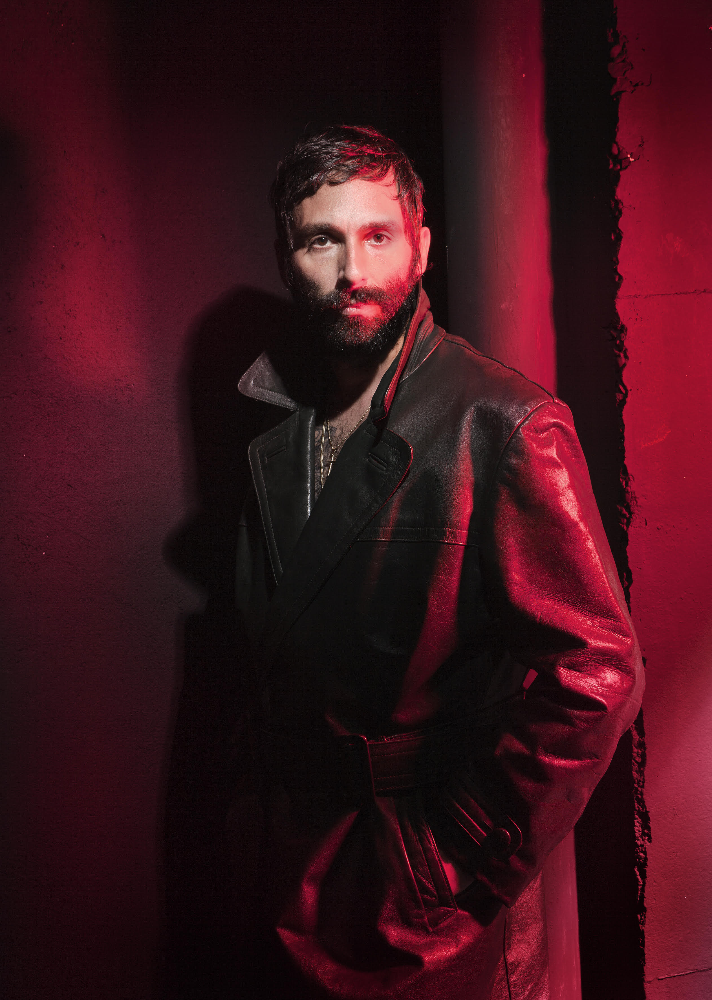
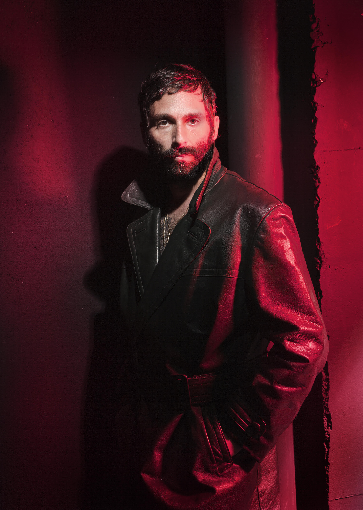

Antonio Culebras
Artista y Coach.

Sobre mí
Las experiencias vitales han llevado a Antonio Culebras (Madrid, 19..) ha crearse una carrera profesional en dos áreas diferenciadas pero complementarias: las artes y el coaching. Su participación en diversos proyectos musicales y sus acciones en el mundo del arte (fotografía, vídeo...) le han servido para aprender una serie de pautas expresivas y de comportamiento para aplicarlas después en aras del bien de la persona y de la sociedad. Para Antonio no existen las complicaciones. De todas las vivencias, tanto las buenas como las malas, ha sabido sacarles su lado más positivo.
Coaching


Su labor como Coach Social es acompañar a individuos y grupos que tengan la inquietud de trabajar, cambiar o indagar en algún aspecto concreto de sus vidas. La clave fundamental del Coaching Ontológico consiste en la subjetividad de lo que nos rodea, y de las diferentes posibilidades de interpretación en función de la persona que observa el mundo. Así pues, es una visión que, en su base, no parte de la búsqueda de la verdad sino de las posibilidades de convivencia a las que da lugar el respeto por las diferentes formas de interpretar lo que ocurre y las vías que se abren cuando la visión se enfoca desde una u otra perspectiva. Antonio Culebras es, además, un gran conocedor de la Meditación Vipassana, una técnica milenaria donde el silencio y la introspección es esencial para que la persona se centre en sí misma y no se 'contagie' de emociones ajenas. Un método indicado para crear un espacio, una 'burbuja' personal que permite estar entregado, pero no perdido, en el otro. Otra herramienta válida para conectar los sentidos con la parte emocional es la aromaterapia. Antonio crea sus propias fórmulas a base de esencias naturales. Lavanda y geranio para descansar, o el romero y menta para tonificar las vías respiratorias... Al igual que ocurre con el binomio música y oido, el olfato y las fragancias sirven para cambiar la energía y el estado de ánimo.
Adicciones

Su trabajo en adicciones lo realiza bajo el prisma de su experiencia como adicto en recuperación y mediante su formación en Conductas y Comportamientos adictivos del Metodo Minnesota, Intervencionista familiar y Sober coach. Este método está basado en el programa de Doce pasos de autoayuda adaptado a los centros de tratamiento. En su faceta como Intervencionista familiar trabaja con el núcleo doméstico. Su especialización son las prevenciones y la información en jóvenes y adolescentes, y la psicoeducacion de sus familias asi como acompañar y llevar un seguimiento de personas que han parado en su adiccion en activo y siguen un proceso de recuperación, restauración y evolución personal ayudando a que las personas controlen sus impulsos y trabajen con las ideas de 'quiero más' o 'nada me satisface'. Una forma de reaprender fuera de la ansiedad y de reeducar la mente.
Arte


Antonio Culebras es un artista multidisciplinar. Aunque estudió Dirección de Documentales y Video Arte, su formación y evolución ha sido siempre autodidacta y espontanea. La creatividad forma parte de su vida tanto a nivel personal como profesional. La perfomance, como acción artística, es la base y la cuna de su desarrollo como artista. Desde aquí ha probado, trabajado y desarrollado diferentes proyectos con o sin guion. Arte visual, música, artes plásticas, moda, escenografía, poesía... son algunas de las disciplinas que ha tratado y en cuya formación no ha parado. Su último reto ha sido estudiar en el instituto de Marina Abramovic para profundizar en su método. Además, considera que el arte y la terapia se sostienen y se retroalimentan por lo que el arte suele estar muy presente en sus trabajos de coaching.
Música

 

Es vocalista en Glamour to Kill, un exitoso grupo de electro rock afincado en Berlín, con varios discos publicados y múltiples conciertos por Europa. Antonio también es promotor de Emotional Narcotic Orchestra (ENO), un proyecto breve pero intenso donde la música orquestal era protagonista. ENO destacó por ser una colaboración para This is Julio, una revista especializada en arte que salió con motivo de la celebración de la famosa feria madrileña Arco especializada en creaciones contemporáneas. Le Grouop es el último proyecto musical en el que está involucrado donde la música experimental es el punto fuerte basada en ritmos dunsteep. Con el mimso equipo, Antonio está materializando la idea de mezclar poesía y música, donde la música clásica, en este caso el piano, se fusiona con los versos de diversos escritores.
Contacto
Madrid, España
Email: mail@mail.com
Si lo prefiere, puede mandar un mensaje: